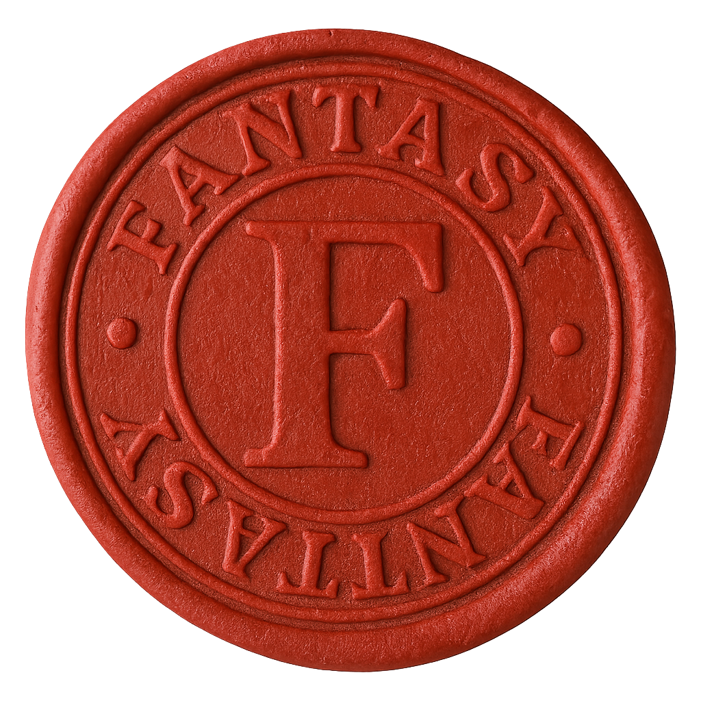

O que você mais idealiza para o seu futuro? Quando se pensa no que está por vir, muitos fazem listas, traçam metas, projetam sonhos… Alguns, até mesmo, escrevem um plano para a vida inteira e o seguem à risca...
Mas ninguém estava de fato preparado para o que ia acontecer naquele ano novo; naquele fatídico dia onde tudo mudaria. Era réveillon, e todos comemoravam o adeus ao antigo e a dádiva do novo. Mas a pestilência veio, a doença se instalou silenciosa, era o grande mal forçando todos a entrarem em estado de hibernação mútua.
Muitos morreram conforme eram acometidos de um sono profundo. Aviões e helicópteros caindo; carros colidindo com força uns contra os outros; trens descarrilhando... Até as barragens se romperam e a água varreu tudo o que viu pela frente.
Isso foi há mais de 100 anos…
Foi então que o recomeço deu uma centelha de esperança para cada ser nesta terra. Os primeiros despertos começaram a se levantar só para testemunhar o caos e o que havia restado da civilização. Eles organizaram cidadelas e começaram a reunir os adormecidos em câmeras que foram chamadas de “ninhos”. Ali, havia a monitoração dos seres humanos para que se observasse no que iriam se transformar. Isso mesmo, você leu certo, “transformar”.
Muitos, durante o estado de hibernação, começaram a sofrer mutações em seus corpos e se tornaram criaturas que antes só existiam em filmes e jogos de videogame, como na maior parte das histórias de apocalipse. Alguns acordaram para descobrir que haviam se tornado criaturas, às vezes dotadas de inteligência, às vezes não. Outros ainda mantinham sua humanidade intacta, esses eram chamados de “Originais”.
Alguns poucos acordaram com dons, com habilidades especiais incríveis que serviriam de grande ajuda pelo que ainda estava por vir. Os dotados dessas habilidades sentiam a presença hostil e perigosa de criaturas que ameaçavam o equilíbrio da Nova Ordem. Esses ficaram conhecidos como “Bentos”, pessoas tocadas pela luz de uma forma especial. Eles conseguiam sentir o cheiro das criaturas tocadas pela escuridão, seus olhos brilhavam como uma brasa acesa quando estavam em fúria, lutando contra essas criaturas, e o sangue que corria em suas veias era como ácido na pele das criaturas das trevas.
No começo, tudo parecia estar se organizando, os sobreviventes haviam se refugiado em territórios murados ou em cavernas. Eles mantinham as criaturas longe o mais tempo possível para que os Bentos pudessem matá-las. Assim, surgiram as 3 principais cidadelas:
• Candeia: o último refúgio dos humanos e seus aliados. Uma cidadela escondida sob toneladas de rocha, alimentada por um rio que garante suprimento de água. Os suprimentos chegavam por comboios guiados e protegidos pelos Riders, patrulheiros das estradas que dedicavam sua vida a buscar as ruínas e escombros em busca de suprimentos e medicamentos. A cidadela era liderada por Padre Lorian, ele falava como quem confessava ao próprio túmulo resignado, ciente de que a fé era tudo o que restava quando o mundo esquecia de orar. Mesmo amargo, ainda oferecia bênçãos aos que partiam, sabendo que nenhum deles retornaria ileso da luz que se apaga.
• Altharion: A cidade dos Cristais se formou em volta da Ordem da Chama Eterna, onde eles adoravam uma relíquia e diziam ser os únicos filhos da luz genuína. E por conta desse fanatismo, caçavam e matavam todos os Bentos que não pertenciam ao culto deles, acusando-os de heresia. A cidade era governada por Kael Voryn. Kael pregava uma fé sem piedade, acreditava ser a própria encarnação da luz e que todo brilho diferente do seu era heresia. Enérgico e terrível, liderava a Ordem da Chama Eterna com fervor messiânico, convencido de que a salvação exigia sacrifício.
• A aldeia de Thalmyra foi construída sobre falésias de pedra branca, de frente para um mar sempre coberto por névoa leve. Os moradores acreditam que a aldeia só existe porque uma antiga criatura das profundezas protege o local de tempestades, monstros marinhos e invasores. Eles não pescam em certas áreas do mar; eles não navegam à noite; e nunca entram na caverna quando a maré está alta, porque ali fica a entrada para o templo.
“Uma profecia irrompe o seio da terra”
Houve uma mulher de pura coragem, admirada pelos outros por sua valentia e honra. Esta fora a primeira a se virar contra a Ordem dos Bentos, diz a profecia que ela havia se tornado o primeiro caído, nomenclatura desonrosa dada aos Bentos que se deixavam corromper pelas trevas, e que esta seria a culpada pela segunda ruína do mundo.
A mulher em questão adotou o nome de Vhar’Zul, a consciência do abismo que diz ser a voz de Abyron, A Escuridão Encarnada.
Sob as promessas de poder e conquista, muitos se deixaram seduzir por Abyron e sua general, Vhar’Zul. As criaturas das trevas começaram a se organizar sob seu estandarte e muitos Bentos, junto de alguns filhos dos Celestiais, quebraram o Juramento Sagrado e fizeram das trevas a sua morada.
Mas quando as trevas se instalam pelo mundo, a luz brilha para que a mente dos arrependidos se esclareça, e para que os bondosos de coração tenham esperança nos dias sombrios. Amar, a deusa nascida da luz, assistiu as tramas do mal amarrarem nós fortes e se estabelecerem no coração dos seguidores de Vhar’Zul, e não houve mais como ficar em silêncio.
A grande Deusa Amar fez dos Bentos seus guardiões, cavaleiros que lutariam em seu nome e seriam os benfeitores, aqueles que empunhariam armas e espadas em favor da luz. A guerra iniciou-se, luz e trevas mergulhando em um mar sangrento, e só assim a humanidade descobriria sua verdadeira essência.
Este é um breve resumo do que aconteceu, desperto. Agora que você acordou, saiba que suas decisões definirão quem você é e qual será seu papel na evolução da raça humana. Mas não se engane, aqui fica uma lição para você, e preste muita atenção: nem toda luz é benigna, e nem toda escuridão é maligna, ambas podem ser benéficas ou prejudiciais, mas a partir do primeiro passo, é você quem define o seu caminho.

Todas as informacoes presentes aqui
podem ser usadas durante o Roleplay